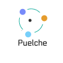

PUELCHE
EN VIVO
🌙
Puelche · 2026 ·
Contacto
Monitor de viento en vivo · Valparaíso · Metropolitana · O'Higgins
▾
📍 Todo Chile central
Valparaíso
Región Metropolitana
O'Higgins
Arica y Parinacota ⏳
Tarapacá ⏳
Antofagasta ⏳
Atacama ⏳
Coquimbo ⏳
Maule ⏳
Ñuble ⏳
Biobío ⏳
La Araucanía ⏳
Los Ríos ⏳
Los Lagos ⏳
Aysén ⏳
Magallanes ⏳
Calma (<5 km/h)
Suave (5–15)
Moderado (15–30)
Fuerte (30–50)
Muy fuerte (>50)
La flecha apunta hacia donde se dirige el viento.
Cargando datos…
⚡ Modo extremo · 5 min (1 h)